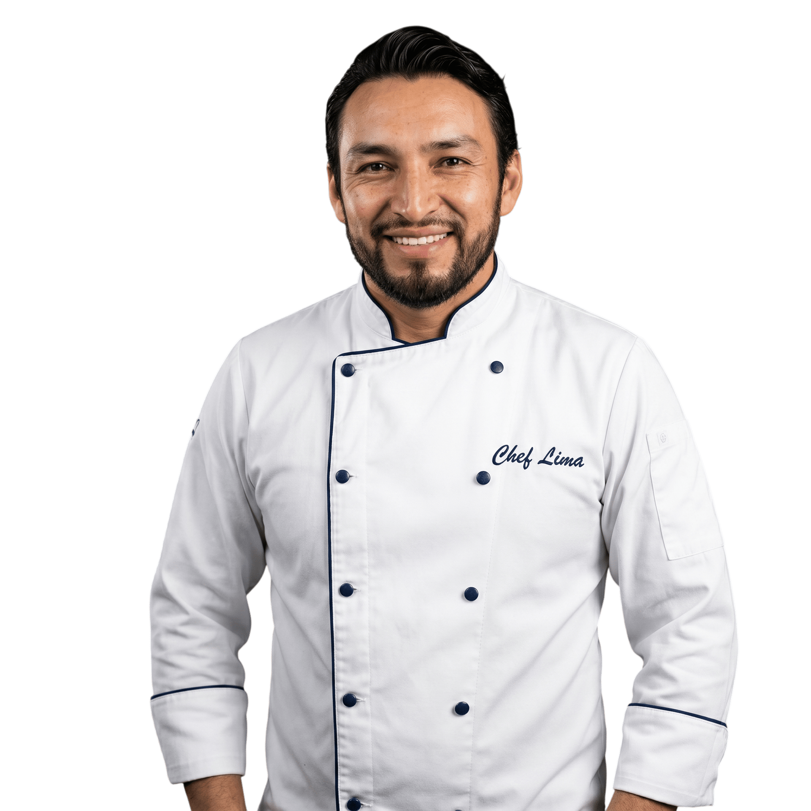
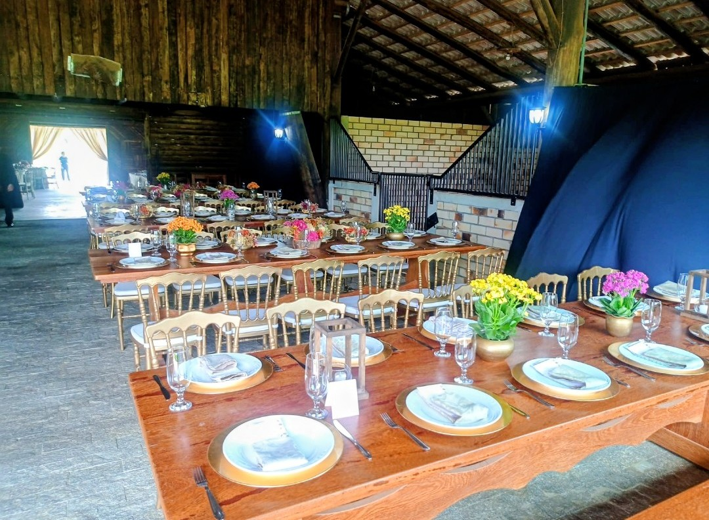
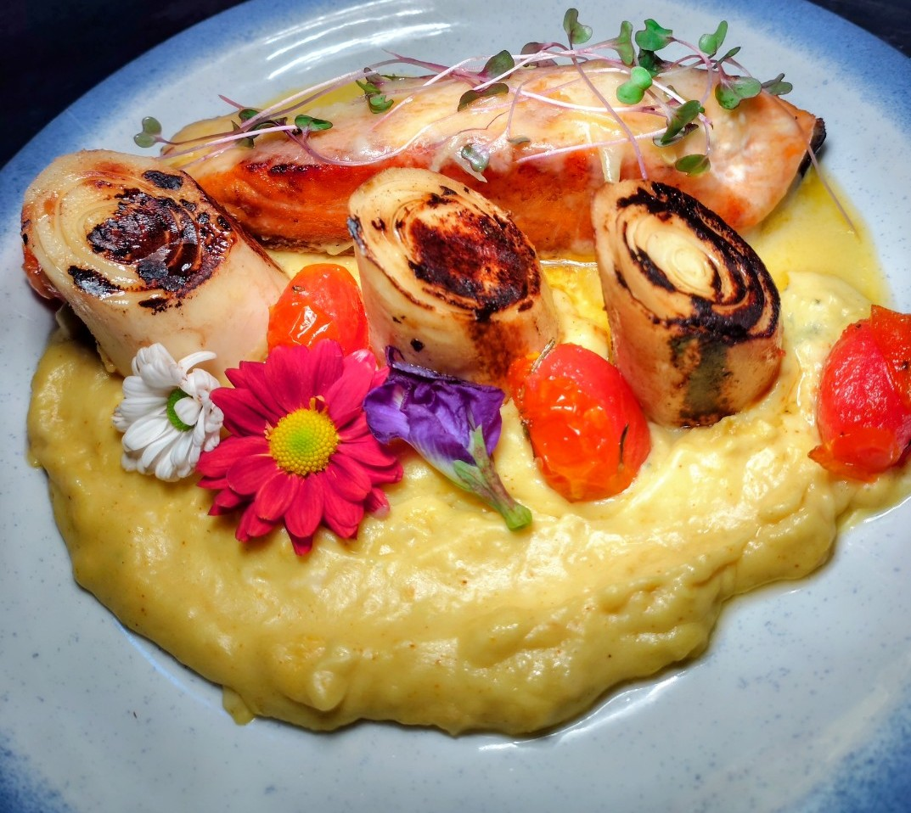
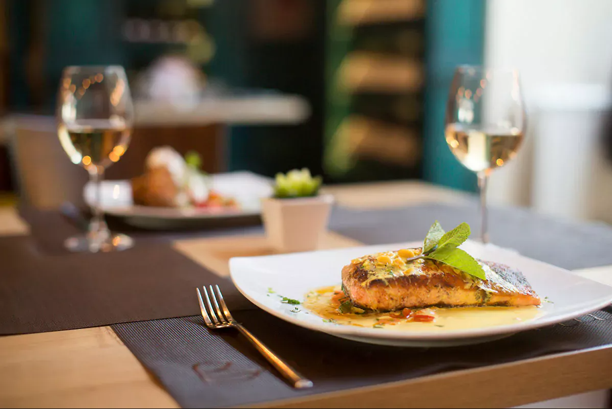
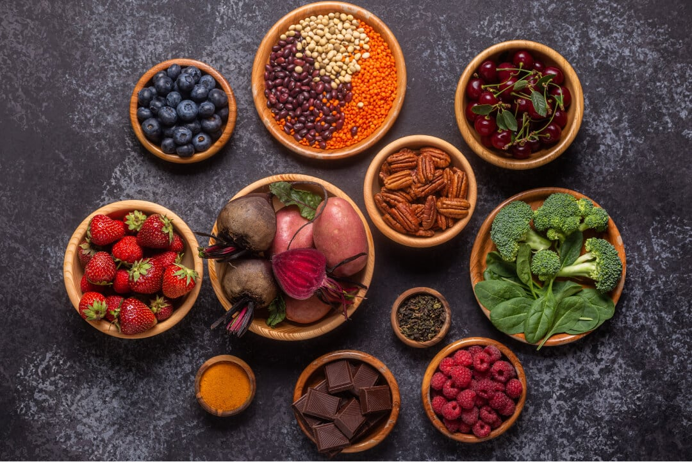

Chef Profissional
Uma experiência
gastronômica
inesquecível
24 anos transformando ingredientes em memórias afetivas.
Do jantar íntimo ao grande evento — cada detalhe importa.
"Cozinhar é um ato de amor. Cada prato é uma história que quero contar para você."
— Chef LimaSobre o Chef
Uma trajetória construída com paixão e dedicação
Natural da Serra da Ibiapaba, no Ceará, o Chef Lima iniciou sua jornada na gastronomia aos 18 anos, movido por uma paixão inata pelos sabores e pela arte de bem receber. Ao longo de mais de duas décadas, sua trajetória o levou por restaurantes do Sul, Sudeste e Nordeste do Brasil, além de experiências em cozinhas internacionais, onde aperfeiçoou técnicas clássicas e contemporâneas.
Com passagens por renomados estabelecimentos em São Paulo, Rio de Janeiro, Santa Catarina e Recife (PE), o chef desenvolveu uma assinatura gastronômica própria: a fusão sofisticada entre a rica culinária regional catarinense e as grandes escolas da gastronomia mundial.
Hoje, o Chef Lima coloca toda essa bagagem a serviço de experiências exclusivas — jantares privados, eventos corporativos, casamentos, festas infantis e ocasiões especiais que ficam na memória de cada convidado.
O que o Chef oferece
Serviços Exclusivos
Cada ocasião é única. Cada cardápio é criado especialmente para você.
Casamentos
Menu sofisticado e personalizado para o dia mais especial. Do coquetel ao jantar, cada detalhe pensado para impressionar seus convidados e tornar a celebração inesquecível.
Solicitar orçamento
Eventos Corporativos
Impressione clientes e parceiros com uma experiência gastronômica que reflete a excelência da sua empresa. Serviço profissional e cardápio de alto padrão.
Solicitar orçamentoAniversários & Celebrações
Celebre com estilo e sabor. Menus completos ou temáticos para aniversários, formaturas e datas comemorativas especiais, com apresentação digna de revista.
Solicitar orçamento
Jantar Privado
Uma experiência gastronômica exclusiva na sua residência ou no local de sua preferência. Cardápio personalizado, mise en place impecável e toda a atenção dedicada a você e seus convidados.
Solicitar orçamento
Consultoria Gastronômica
Desenvolvimento de cardápios, treinamento de equipe, implantação de processos e consultoria completa para restaurantes que buscam elevar seu padrão de qualidade.
Solicitar orçamento
Desenvolvimento de Cardápios
Criação de menus personalizados alinhados à identidade do seu negócio ou evento. Equilíbrio entre técnica, sazonalidade, custo e excelência sensorial.
Solicitar orçamentoMomentos & Criações
Galeria
Cada imagem conta uma história de sabor, arte e emoção.
O que dizem
Experiências que Emocionam
Entre em Contato
Vamos criar algo
extraordinário juntos
Conte-me sobre seu evento, o número de convidados, a data e suas preferências. Vou criar uma proposta gastronômica exclusiva para você.